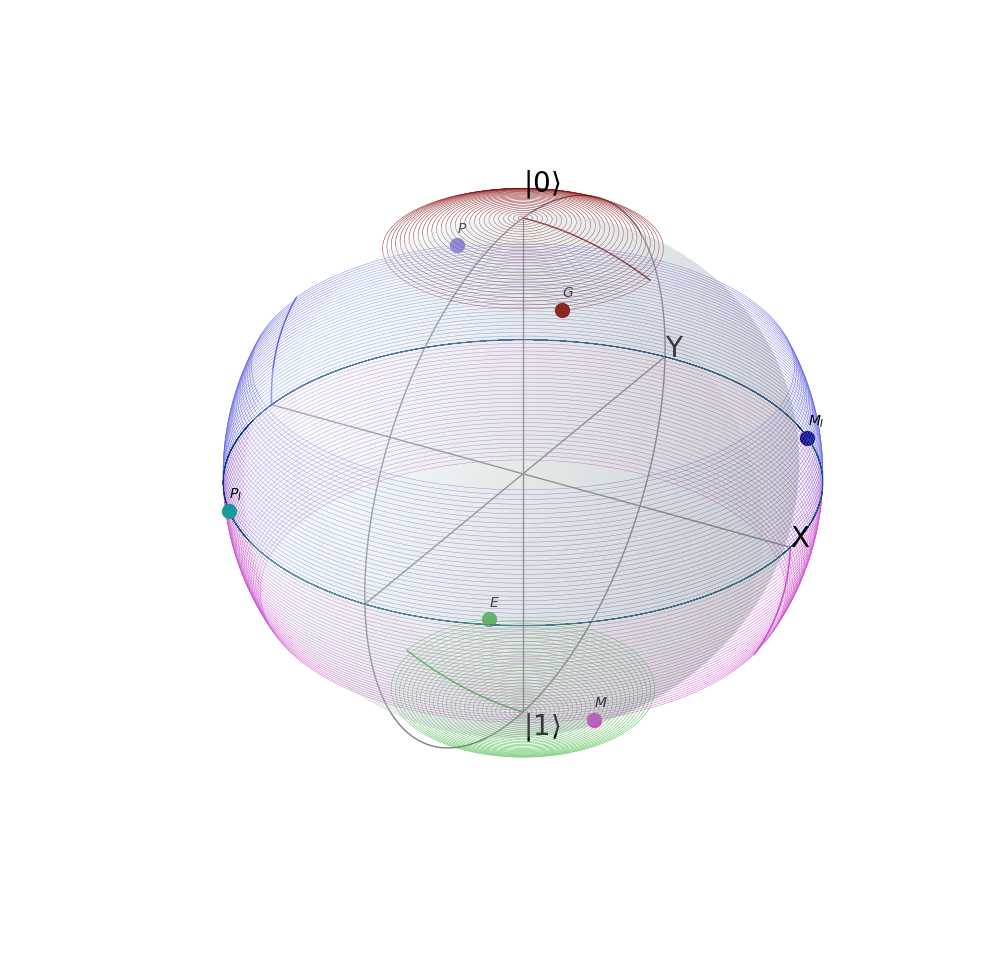
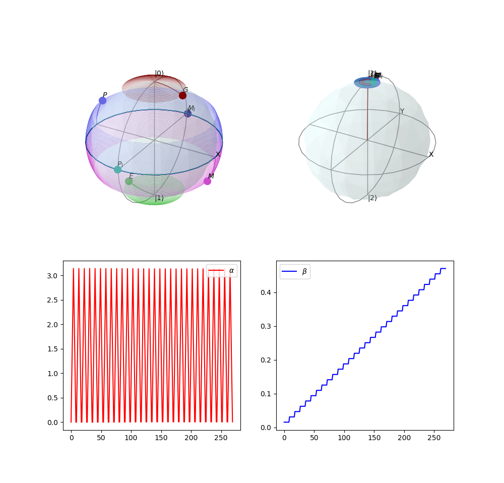

1 Installation
The code is developed in python2, but python3 should not be a problem.
pip install sfqlib
For the latest version, install from the wheels in `dist/`.
2 Create a Qubit
When a qubit is created, it starts at |0> state. However, all 6 cardinal states on the block sphere are tracked. There are two types of basic qubit.
- Sfq3LevelQubit: A qubit that includes the leakage level.
- Sfq2LevelQubit: An ideal two level qubit.
Each qubit is defined by its
- Qubit frequency (both w01 and w12)
- Clock frequency.
- Rotation induced by a single SFQ pulse.
- Target rotation, against which we define the infidelity.
For example, to create a 3 level qubit.
qubit = Sfq3LevelQubit(d_theta=pi/200, w_clock=2*pi*5e9, w_qubit=(2*pi*5.0e9, 2*pi*9.8e9), theta=pi/2)
3 Qubit Evolution.
3.0.1 Evolve a qubit
We can do three basic things on a qubit.
precess for one clock period.
qubit.precess()Apply a SFQ pulse and precess for one clock period. It is
pulse_and_precessrather thanpulsebecause- Applying two pulses consecutively is not possible experimentally.
- It simplifies programming.
qubit.pulse_and_precess()Measure the fidelity. The fidelity is averaged over the 6 states.
qubit.measure_fidelity()In case of three level qubits, you can optionally ignore the indelity due to leakage level.
qubit.measure_fidelity(ignore_leakage=True)
Suppose that we created a qubit
3.0.2 More usage
You can apply arbitrary pulse sequences by interleaving
precess and pulse_and_precess,
but there are a few helper functions for doing that.
- Resonance
You can apply a resonance requence that achieves that target rotation by
qubit.resonance()
- Pulse pattern
A sequence can be specified as a bit string. Each bit corresponds to a clock edge, where
- 1 means applying a SFQ pulse at the clock edge.
- 0 means not applying a SFQ pulse at the clock edge.
For example, if one wants to apply pulses at the 4th and 6th clock edge.
pattern = [0, 0, 0, 1, 0, 1] qubit.pulse_pattern(pattern)
4 Fancy Qubits
The qubit implementation discussed above runs at the speed of C++ when numpy uses MKL. To maintain that speed, operations that harm performance are separated into `FancyQubits`. Currently, there are two main features in `FancyQubits`.
- Euler angles.
- Visual Qubit.
4.1 Create a Fancy Qubit
To allow users to manipulate the visualization, the qubit will be visualized on a axis provided by the user.
- Sfq2LevelFancyQubit
For 2 level qubit, one axis is required.
qubit = Sfq2LevelFancyQubit(axis, d_theta=pi/200, w_clock=2*pi*40e9, w_qubit=(2*pi*5.0e9, 2*pi*9.8e9), theta=pi/2)
- Sfq3LevelFancyQubit
For 3 level qubit, to plot in both the 0-1 subspace and the 1-2 subspace, 2 axes are required.
qubit = Sfq3LevelFancyQubit((axis_01, axis_12), d_theta=pi/200, w_clock=2*pi*40e9, w_qubit=(2*pi*5.0e9, 2*pi*9.8e9), theta=pi/2)
4.2 Euler angles.
Fancy qubit records the Euler angles of the rotation at each step. For mathematical details, see the document `euler.pdf`.
4.3 Visual Qubit
BEFORE evolving the qubit, use the function `setprojectionsource` to specify which cardinal states you would like visualize. The states are specified as the following. +'G': Ground (+z) +'E': Excited (-z) +'P': (+x) +'PI': (+y) +'M': (-x) +'MI': (-y)
4.4 Usage
First we initiate some axes.
fig = plt.figure(figsize=(10, 10)) axis_01 = fig.add_subplot(2, 2, 1, projection='3d', label='0-1 subspace') axis_12 = fig.add_subplot(2, 2, 2, projection='3d', label='1-2 subspace') axis_alpha = fig.add_subplot(2, 2, 3) axis_beta = fig.add_subplot(2, 2, 4)
The we create a qubit.
qubit = Sfq3LevelFancyQubit((axis_01, axis_12), d_theta=pi/200, w_clock=2*pi*40e9, w_qubit=(2*pi*5.0e9, 2*pi*9.8e9), theta=pi/2)
Specify the cardinal states to visualize. In this case, we want all states.
qubit.set_plot_kets(['G', 'E', 'P', 'M_I', 'P_I', 'M'])
Evolve the qubit. Note that this is a resonant sequence.
for i in range(30): qubit.pulse_and_precess() for j in range(7): qubit.precess()
Plot the Euler angles.
axis_alpha.plot(qubit.alpha_list, label=r'$\alpha$', color='r') axis_beta.plot(qubit.beta_list, label=r'$\beta$', color='b')
Show the plot.
axis_alpha.legend() axis_beta.legend() plt.show()

4.5 Notes
- If you are using Jupyter notebook or IPython REPL, the qubit visualization supports interactive plotting.